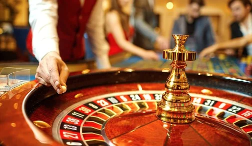
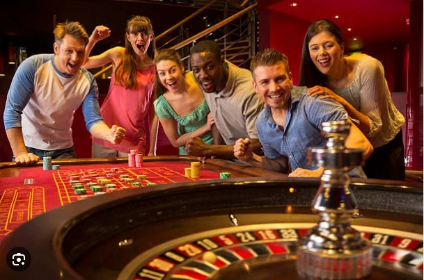

Recomendacion & Consejos
Cosas que apostamos que no sabes sobre la ruleta?
Ruleta / 27 jul, 2023
Si hay algo que no puede faltar en un casino es la clásica ruleta. Su nombre viene de la palabra francesa roulette y significa pequeña rueda. No se sabe con exactitud en qué momento comenzó a ser uno de los favoritos en cuestiones de azar. Pero sabemos que en la entrada de la Edad Media ya formaba parte de las más grandes reuniones sociales.
La creación de la ruleta como la conocemos hoy es gracias a un matemático francés que creó una ruleta con 36 números, sin contar el cero. Número que comenzó a estar presente en 1842 cuando los hermanos Blanc la modificaron para el Casino de Montecarlo.
Hay muchos otros datos interesantes que hicieron que la ruleta se convierta en la que encontramos hoy en todos los casinos, ¿qué te parece si los conocemos?
1. Juego del demonio
Se creía que Blaise Pascal, el matemático francés del que hablábamos, había hecho trato con el diablo para poder crear esta rueda. Cuando el matemático estaba trabajando en crear una máquina de movimiento perpetuo, un amigo lo desafío a crear un juego de casino que no beneficiara a la casa. Para poder hacerlo, Pascal se basó en su idea original y creó la primera ruleta.
Ahora bien, ¿qué tiene todo esto que ver con el diablo? Pues además de pensar que había hecho un trato con el mismo para adquirir conocimiento. La suma de los números que decidió colocar en la ruleta sumaba 666. Ambos factores hicieron que la gente considere que Pascal era un seguidor del demonio.
2. Casillero del Águila
El Casillero del Águila o Eagle Shot en inglés, era una característica que estaba presente en las primeras ruletas americanas. Si bien hay muchas diferencias entre la americana y la europea. En sus comienzos la más grande era la presencia de una casilla que se llamaba “Eagle Shot” que era un poco más grande que las demás.
Esta casilla hacía que la ventaja de la casa sea más grande, por lo que la mayoría de los jugadores estaba en desacuerdo, lo que posteriormente generó que se elimine del juego.
3. Ruleta Europea vs Ruleta Americana
Como mencionamos en el punto anterior hay algunas diferencias esenciales entre estos dos tipos de ruleta. Sin embargo la principal diferencia está en que la europea tiene un casillero con un solo cero y la americana tiene el doble cero.
4. Quebrar la banca
Si bien la ruleta es un juego de azar en donde la suerte entra totalmente en cuestión, se cree que la casa siempre tiene una cierta ventaja al largo plazo. Si bien puede ganar cualquiera una vez que la bolilla está girando, las probabilidades de que el jugador no acierte su apuesta son mayores.
A pesar de esto, en la historia de los casinos hubo unos cuantos ganadores que han hecho historia. Uno de ellos es Charlie Wells, quien inspiro a la canción “The Man Who Broke the Bank at Monte Carlo”, cuando fue al Casino en Monte Carlo con 4000 francos, apostando cerca de 2000 en una sola jugada y recibiendo antes de irse unos cuantos millones.
5. Número de la suerte
El número siete siempre ha estado asociado a la buena suerte y a la fortuna, principalmente por un tema religioso y espiritual, desde siempre. En los casinos solemos ver bastante seguido este número y en lo que se refiere a ruleta. Se cree que el mes de julio es el mes de la suerte. En el 2000, en el Casino de Las Vegas Caesars Palace el número salió seis veces seguidas. Las probabilidades de que esto suceda son de tres billones en una.
La mística detrás de la ruleta girando y la bolilla moviéndose por todos los casilleros han sido y son muy grandes en el correr de la historia de los casinos. En la actualidad, en una mesa de ruleta se concentran muchas emociones y deseos. Esto ayudo a que se convierta en uno de los juegos más populares del mundo, ¿alguna vez lo probaste? Si estás pensando en jugar, te recomendamos comenzar por Casino Bodog. Dónde podrás acceder a las mejores mesas sin límite de dinero de entrada y con las mejores opciones para ganar
¿Quieres ser un constante ganador en las loterías?
Quieres pertenecer tú también a mi grupo de ganadores.
contactanosNoticias y Recomendaciones
Los mejores metodos, consejos y noticias, sobre las ruletas de casino
Recomendacion & Consejos
Ruleta europea y americana: ¿a cuál conviene jugar?
Recomendacion & Consejos